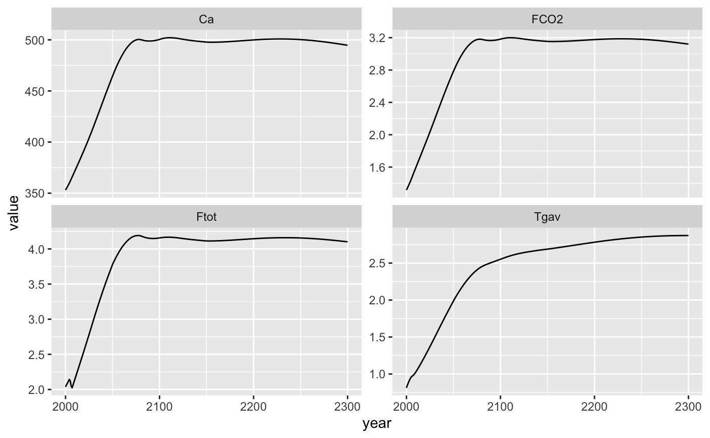
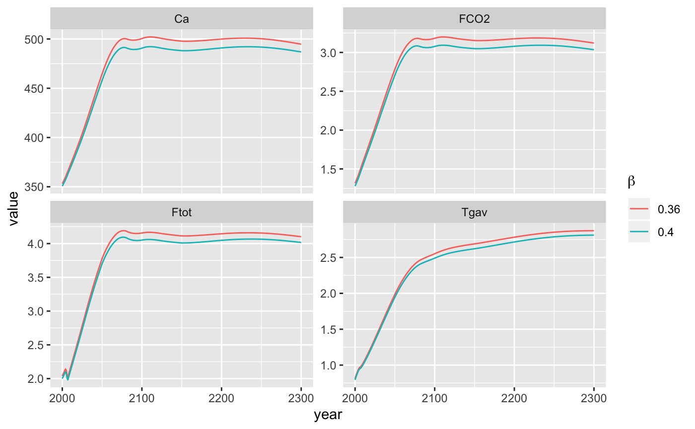
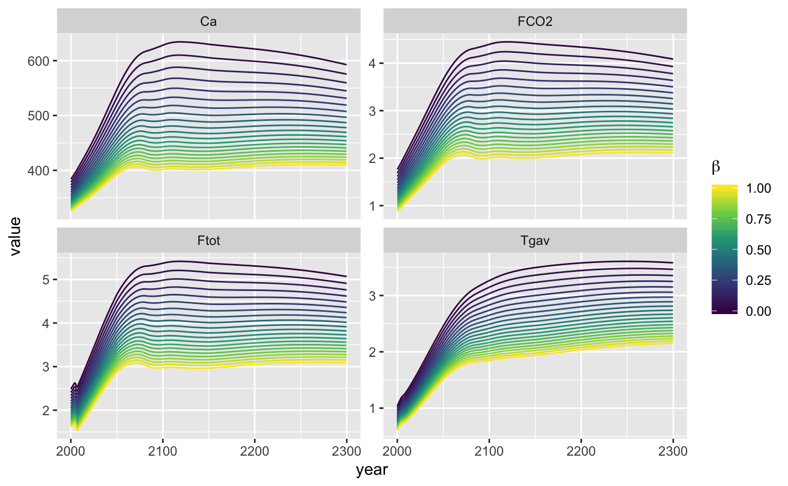

intro-to-hector.RmdThis vignette provides a basic introduction for running Hector with R. First, it shows how to do a simple Hector run with one of Hector’s built-in scenarios. Then, it shows how to modify Hector parameters from within R and uses this functionality to perform a simple sensitivity analysis of how the CO\(_2\) fertilization parameter \(\beta\) affects several Hector output variables.
First, load the hector package.
library(hector) Hector is configured via an INI file, which defines run metadata, inputs (e.g. emissions scenarios), and parameters. For details on this file, see InputFiles on the Hector GitHub Wiki.
These files ship with the Hector R package, in the input subdirectory, which allows them to be accessed via system.file. Below, we get the path of the input file corresponding to the scenario RCP 4.5.
ini_file <- system.file("input/hector_rcp45.ini", package = "hector") Next, we initialize a Hector instance, or “core”, using this configuration. This core is a self-contained object that contains information about all of Hector’s inputs and outputs. The core is initialized via the newcore function:
core <- newcore(ini_file)
core ## Hector core: unnamed hector core
## Start date: 1745
## End date: 2300
## Current date: 1745
## Input file: /Users/shik544/R/hector/input/hector_rcp45.iniNow that we have configured a Hector core, we can run it with the run function.
run(core) ## Hector core: unnamed hector core
## Start date: 1745
## End date: 2300
## Current date: 2300
## Input file: /Users/shik544/R/hector/input/hector_rcp45.iniNotice that this itself returns no output. Instead, the output is stored inside the core object. To retrieve it, we use the fetchvars function. Below, we also specify that we want to retrieve results for the years 2000 to 2300.
## scenario year variable value units
## 1 unnamed hector core 2000 Ca 353.0744 ppmv CO2
## 2 unnamed hector core 2001 Ca 354.6760 ppmv CO2
## 3 unnamed hector core 2002 Ca 356.3236 ppmv CO2
## 4 unnamed hector core 2003 Ca 358.0162 ppmv CO2
## 5 unnamed hector core 2004 Ca 359.7927 ppmv CO2
## 6 unnamed hector core 2005 Ca 361.7058 ppmv CO2The results are returned as a long, tidy data.frame. This makes it easy to plot them using ggplot2.
library(ggplot2)
ggplot(results) +
aes(x = year, y = value) +
geom_line() +
facet_wrap(~variable, scales = "free_y")
The Hector R interface interacts with parameters and variables in the same way. Therefore, the variables can be set and checked via setvar and fetchvars, respectively.
First, let’s get the current value of \(\beta\) (beta), the CO\(_2\) fertilization factor. Because variables and parameter names have to be retrieved from the Hector core, they are stored as R functions (e.g. BETA()). However, these functions simply return a string corresponding to the variable name.
BETA()## [1] "beta"Just as we did to load results, we use fetchvars to query parameter values.
## scenario year variable value units
## 1 unnamed hector core NA beta 0.36 (unitless)The result of fetchvars is always a data.frame with the same columns, even when returning a parameter value. Note also the use of NA in the second argument (dates).
The current value is set to 0.36 (note that it is a unitless quantity, hence the (unitless) unit). Let’s bump it up a little to 0.40.
Similarly to run, this returns no output. Rather, the change is stored inside the Hector “core” object. We can confirm that our change took effect with another call to fetchvars.
## scenario year variable value units
## 1 unnamed hector core NA beta 0.4 (unitless)Now, let’s run the simulation again with a higher value for CO2 fertilization. But, before we do, let’s look once again at the Hector core object.
## Hector core: unnamed hector core
## Start date: 1745
## End date: 2300
## Current date: 2300
## Input file: /Users/shik544/R/hector/input/hector_rcp45.iniNotice that Current date is set to 2300. This is because we have already run this core to its end date. The ability to stop and resume Hector runs with the same configuration, possibly with adjusting values of certain variables while stopped, is an essential part of the model’s functionality. But, it’s not something we’re interested in here. We have already stored the previous run’s output in results above, so we can safely reset the core here.
reset(core)## Hector core: unnamed hector core
## Start date: 1745
## End date: 2300
## Current date: 1745
## Input file: /Users/shik544/R/hector/input/hector_rcp45.iniThis will effectively “rewind” the core back to either the provided date (defaults to 0 if missing) or the model start date (set in the INI file; default is 1745), whichever is greater. In addition, if the date argument is less than the model start date and spinup is enabled (do_spinup = 1 in the INI file), then the core will re-do its spinup process with the current set of parameters.
NOTE
Because changing Hector parameters can change the post-spinup equilibrium values of state variables, Hector will automatically run reset(core, date = 0) at the beginning of the next run call if it detects that any of its parameters have changed. This means that is not currently possible to change Hector parameters (such as \(\beta\) or preindustrial CO2) part-way through a run. However, it is still possible to change the values of certain drivers and state variables (such as the CO2 emissions) in the middle of a run.
So, as a result of the reset command, the core’s “Current Date” is now the model start date–1745. We can now perform another run with the new CO\(_2\) fertilization value.
run(core)## Hector core: unnamed hector core
## Start date: 1745
## End date: 2300
## Current date: 2300
## Input file: /Users/shik544/R/hector/input/hector_rcp45.ini## scenario year variable value units
## 1 unnamed hector core 2000 Ca 350.6232 ppmv CO2
## 2 unnamed hector core 2001 Ca 352.1657 ppmv CO2
## 3 unnamed hector core 2002 Ca 353.7535 ppmv CO2
## 4 unnamed hector core 2003 Ca 355.3855 ppmv CO2
## 5 unnamed hector core 2004 Ca 357.1007 ppmv CO2
## 6 unnamed hector core 2005 Ca 358.9513 ppmv CO2Let’s see how changing the CO2 fertilization affects our results.
results[["beta"]] <- 0.36
results_40[["beta"]] <- 0.40
compare_results <- rbind(results, results_40)
ggplot(compare_results) +
aes(x = year, y = value, color = factor(beta)) +
geom_line() +
facet_wrap(~variable, scales = "free_y") +
guides(color = guide_legend(title = expression(beta)))
As expected, increasing CO2 fertilization increases the strength of the terrestrial carbon sink and therefore reduces atmospheric CO2, radiative forcing, and global temperature. However, the effects only become pronounced in the latter half of the 21st Century.
Hector runs fairly quickly, which makes it easy to run lots of simulations under slightly different configurations. One application of this is to explore the sensitivity of Hector to variability in its parameters.
The basic procedure for this is the same as in the previous section. However, to save typing (and, in general, to be good programmers!), let’s create some functions.
#' Run Hector with a parameter set to a particular value, and return results
#'
#' @param core Hector core to use for execution
#' @param parameter Hector parameter name, as a function call (e.g.
#' `BETA()`)
#' @param value Parameter value
#' @param dates Sequence of years for running simulation (default = #'
#' `2000:2300`)
#' @param ini_file Hector parameter file (default = RCP 4.5 file)
#' @return Results, as data.frame, with additional `parameter_value`
#' column
run_with_param <- function(core, parameter, value) {
old_value <- fetchvars(core, NA, parameter)
unit <- as.character(old_value[["units"]])
setvar(core, NA, parameter, value, unit)
reset(core)
run(core)
result <- fetchvars(core, 2000:2300)
result[["parameter_value"]] <- value
result
}
#' Run Hector with a range of parameter values
run_with_param_range <- function(core, parameter, values) {
mapped <- Map(function(x) run_with_param(core, parameter, x), values)
Reduce(rbind, mapped)
}
sensitivity_beta <- run_with_param_range(core, BETA(), seq(0, 1, 0.05))
ggplot(sensitivity_beta) +
aes(x = year, y = value, color = parameter_value, group = parameter_value) +
geom_line() +
facet_wrap(~variable, scales = "free_y") +
guides(color = guide_colorbar(title = expression(beta))) +
scale_color_viridis_c() 
As we can see, the ability of CO\(_2\) fertilization to offset carbon emissions is saturating – at high values of \(\beta\), the same increase in \(\beta\) translates into a smaller decrease in atmospheric CO\(_2\) and related climate effects.